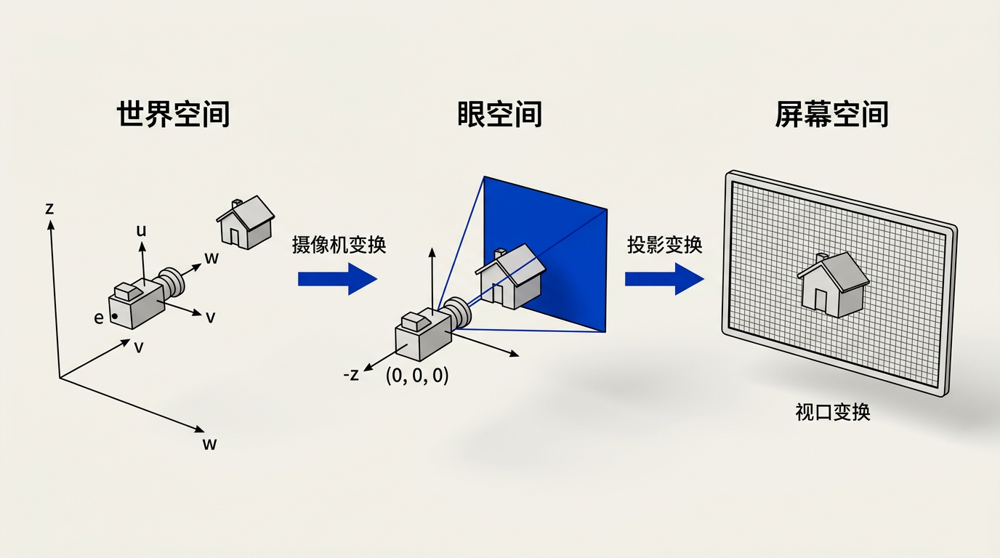
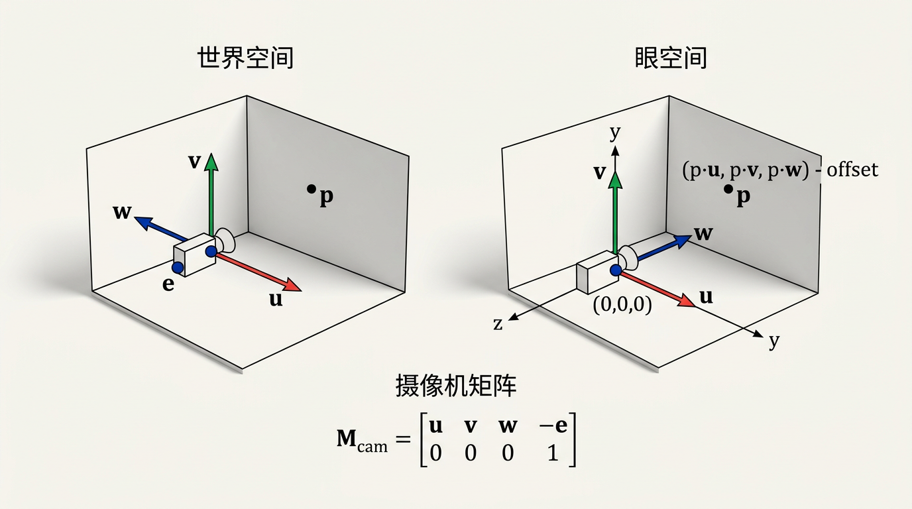
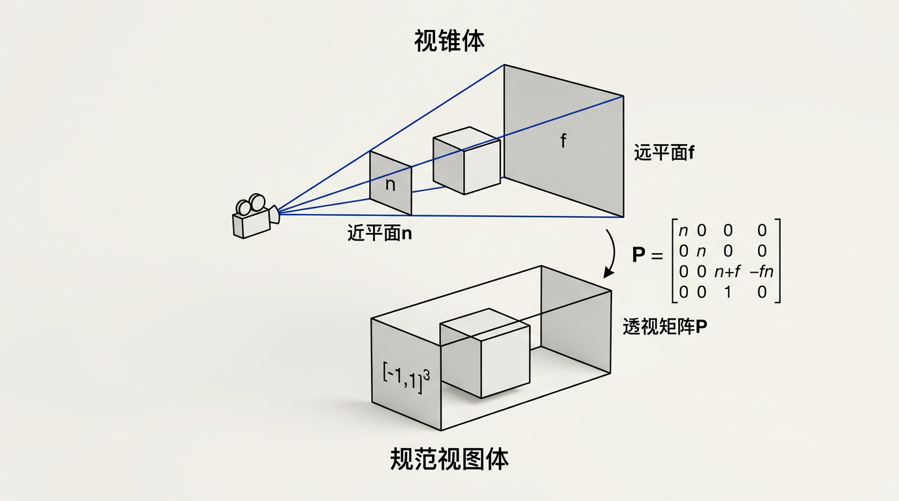

本讲义基于 Steve Marschner & Peter Shirley 所著《虎书》（Fundamentals of Computer Graphics）第5版第8章（p.174-190）视图。
从世界到屏幕的三矩阵序列——摄像机矩阵、正交投影、透视投影与齐次除法、视场角 FOV。理解视图是理解一切实时渲染的前提。
本版插画采用 Guizang 材质插画风格重新绘制。

在第 4 章中，我们探讨了如何根据给定的视图生成视线以达到光线追踪的目的——一种生成图像的方法，其中我们寻找沿每条视线的最近物体。本章讨论相反的过程：如何使用矩阵变换来表达任何平行视图（正交投影）或透视视图。这些变换将场景中的三维点投影到图像空间中的二维位置——即给定像素的视线反向映射到该像素在图像空间中的位置。这是光栅化渲染管线的基础：在屏幕空间中对几何体进行排序，并将其光栅化为像素。
我们将在本章中讨论的变换将三维点映射到一个三维空间中，该空间在投影坐标中被压缩，使得前两个坐标对应于图像平面中的位置，而第三个坐标携带深度信息（遮挡排序和 z 缓冲所需）。在阅读本章之前，建议回顾第 4 章中关于透视和视线生成的讨论。本章建立了从世界空间到屏幕的完整数学桥梁——也是整个光栅化管线中最关键的一段。
视图变换（viewing transformation）负责将三维位置（表示为 (x,y,z) 坐标）映射到图像中的二维位置（表示为 (x,y) 像素坐标）。这是一个涉及许多因素的复杂映射，包括摄像机位置和朝向、投影类型、视场角以及图像的分辨率。与所有复杂变换一样，我们通过将整个过程分解为几个较简单变换的乘积来处理它。大多数图形系统通过三个矩阵的序列来实现这一点：
这种分解分离了不同的关注点：摄像机放置、投影类型和最终图像分辨率。摄像机变换编码了第 7 章中讨论的坐标变化——将世界空间点带到以摄像机为中心的眼空间。投影变换封装了几何光学：正交投影用于工程视图，透视投影用于真实感渲染。视口变换处理最终图像分辨率，将标准化范围拉伸到实际像素坐标。我们可以依次考虑每个变换。

摄像机变换是一个刚体变换——平移加旋转。它由摄像机的位置 e（眼点）和其朝向定义，朝向由三个标准正交基向量指定：u（指向摄像机右侧）、v（指向上方）、w（指向观察方向的反方向，即从场景指向摄像机）。摄像机变换将摄像机移动到原点并使 u、v、w 分别与 x、y、z 轴对齐。摄像机矩阵 M_cam 由以下公式给出：
[u_x u_y u_z −u·e]
[v_x v_y v_z −v·e]
M_cam = [w_x w_y w_z −w·e]
[ 0 0 0 1 ]
前三列将世界坐标旋转到摄像机坐标（通过点积将世界向量投影到摄像机基向量上）。第四列添加平移以将视点移至原点。注意摄像机变换是第 7.5 节中坐标变换的直接应用——将点从世界框架变换到摄像机框架。左上角的 3×3 旋转矩阵 R 由摄像机基向量构成——它的每一行是一个摄像机坐标轴在世界空间中的方向。平移部分 −R·e 确保世界坐标中的摄像机位置 e 被映射到眼空间的原点。
生活类比：自由女神像自拍 — 想象你在纽约自由港，站在自由女神像脚下掏出手机自拍。你的手机（摄像机）有一个位置 e（你站的地方），有一个朝向——屏幕对着你（w 方向指向你身后，即观察反方向），顶部朝上（v 方向），右侧朝右（u 方向）。M_cam 做的事就是把整个世界"搬"到你面前——以自由女神像为世界中心，M_cam 把它拉到你手机屏幕的坐标系中：自由女神像位于"画面中央偏右上方"这些事，全靠 M_cam 里面那堆矩阵数字在悄悄算。这就是为什么 M_cam 又叫"视图矩阵"——它定义了你"怎么看"这个世界。
想一想： M_cam 为什么是仿射逆？——摄像机变换 M_cam 本质上不是"正向放置摄像机"，而是把整个世界反向搬动，使得摄像机恰好处于原点。如果你知道摄像机的世界位置 e 和朝向矩阵 [u v w]，它的"正向"仿射矩阵（模型矩阵）是 M_model = [u v w e; 0 0 0 1]——这是把摄像机"放"到世界中。而摄像机矩阵 M_cam = M_model⁻¹ = [Rᵀ −Rᵀ·e; 0 1] ——恰好是它的逆！因为 R 是正交矩阵（Rᵀ = R⁻¹），旋转部分取转置、平移部分取 −Rᵀ·e。理解这个关系后，模型矩阵和视图矩阵的对称美跃然纸上：一个是"把物体放出去"，一个是"把世界收回来"。
想一想： 为什么不把三个矩阵直接乘成一个？——是的，最终传给 GPU 的确实是一个合成矩阵 MVP = M_proj × M_view × M_model。但拆成三段的根本原因不是"数学上必需"，而是软件工程上的关注分离：修改摄像机位置只需改 M_view、切换正交/透视只需改 M_proj、改变屏幕分辨率只需改 M_viewport——三者互不干扰。如果你把它们捏成一个大矩阵，每改一次 FOV 就得重新解算整个矩阵，而分开后只需替换投影那一环。这种模块化设计让多摄像机渲染（阴影贴图、反射探针、后处理）成为可能——只需为每个 pass 换一个 M_view 即可，场景物体和投影参数保持不变。
正交投影（orthographic projection）是最简单的投影：它简单地丢弃 z 坐标，保持 x 和 y 不变。这对应于所有投影线平行的视图——在工程制图和俯视图中有用，因为没有透视缩短，平行线保持平行。与透视投影不同，正交投影不模拟人眼或相机的光学行为——它是一种纯粹的几何映射，将三维空间"压缩"到二维平面上。
在实践中，正交投影通常映射到一个标准化的规范视图体（canonical view volume）——一个轴对齐的盒体 [−1,1]³。这个盒体之外的点被裁剪（丢弃），盒体内的点被投影到图像平面上。正交投影矩阵将任意轴对齐盒体 [l,r]×[b,t]×[n,f] 映射到 [−1,1]³：
[2/(r−l) 0 0 −(r+l)/(r−l)]
[ 0 2/(t−b) 0 −(t+b)/(t−b)]
M_ortho = [ 0 0 2/(n−f) −(n+f)/(n−f)]
[ 0 0 0 1 ]
这个矩阵的设计逻辑非常直观。它分两步：(1) 平移使盒体中心对齐原点——即第四列用 −(r+l)/(r−l)、−(t+b)/(t−b)、−(n+f)/(n−f) 将中心移至零点；(2) 缩放使每个维度从 −1 到 1——即对角线上的 2/(r−l)、2/(t−b)、2/(n−f) 将宽度拉伸到 2。注意 z 坐标也被缩放——尽管我们在正交投影中丢弃了 z 用于显示，但 z 在裁剪空间中仍然被保留，用于隐藏表面消除（z 缓冲）。窗口 [n,f] 定义了可见的深度范围：近平面和远平面之外的任何物体都会被裁剪。常规约定是看向 −z 方向，因此 n 和 f 都是负值，且 n > f（即近平面比远平面更接近摄像机，它的数值更大因为负方向）。
生活类比：工程蓝图 — 正交投影就是建筑设计师的平面图。房子的三维结构——墙多高、屋顶多斜——在蓝图上被"压平"了：所有的垂直线从上方投射下来，一楼和二楼的墙线完全重合，没有任何"远小近大"。每一根线都是真实长度和角度——工程师用尺子一量，就能说出这根梁长 3.5 米，而不是像照片上那样需要推算。CAD 软件默认用正交投影正是这个原因——精确性永远优先于真实感。正交投影丢弃了 z，换来了"平行永远平行"的几何保真度。
想一想： 正交投影为什么用左手系？——在标准图形学约定中，眼空间使用右手系：x 向右、y 向上、z 从屏幕指向外（摄像机看向 −z 方向）。但在规范视图体 [−1,1]³ 中，OpenGL 使用左手系：x 向右、y 向上、z 向屏幕内。这意味着远平面 z=f（更负的值）映射到规范 z=+1（更"远"），近平面 z=n（更大的值）映射到规范 z=−1（更"近"）。这个符号翻转是刻意的——它使得"更大的规范 z"始终意味着"更远"，符合直觉的编程约定。但这是左手系和右手系之间的转换——如果你看到代码中 n 和 f 取负值使用，那正是因为这个坐标系转换。DirectX 为了避免混淆直接使用 [0,1] 规范体。
想一想： 如果正交投影不丢弃 z，z 被用来做什么？——z 缓冲（z-buffer）！即使正交投影不需要深度感来做"近大远小"，它仍然需要知道哪个面在前、哪个面在后，才能在屏幕上正确显示遮挡关系。想象建筑蓝图上两个叠在一起的平面——z 缓冲根据规范 z 的大小决定哪个片元最终被显示，前面的覆盖后面的。正交投影中 z 是线性映射（因为透视除法 w=1），所以深度精度在整个深度范围内是均匀的——这是它和透视投影最大的区别之一。不过代价也很明显：正交投影下远处的物体和近处一样大，所以你分不清哪个在前——必须靠 z 缓冲的隐式排序来"看清"。

对于透视投影（perspective projection），重要的几何事实是：物体的大小与其到摄像机的距离成反比。如果像平面位于 z = −d（摄像机看向 −z），则通过相似三角形：(y_s, z_s) 投影到 y_p = −d·y/z。在齐次坐标中，这一除法可以由透视矩阵优雅地处理——通过将 z 放入齐次坐标 w 中使得硬件自动执行除以 z。透视投影矩阵为：
[n 0 0 0 ]
[0 n 0 0 ]
P = [0 0 n+f −fn]
[0 0 1 0 ]
将此矩阵应用于齐次点 (x,y,z,1) 产生 (nx, ny, (n+f)z − fn, z)。转换为笛卡尔坐标需要除以齐次坐标 w = z，得到 (nx/z, ny/z, n+f − fn/z)。这正是我们想要的行为：x 和 y 按 1/z 缩放（远物变小），而 z 以保留深度排序的方式重新映射。
第一行和第二行简单地实现了透视方程——将 x 和 y 分别乘以 n（近平面距离），随后由 w=z 的齐次除法完成除以 z 的效果。第三行——与正交矩阵一样——旨在将 z 坐标带入规范范围。然而，在透视投影中，非恒定分母的引入使得矩阵在齐次除法后产生一个随 1/z 变化的深度值。这具有非常理想的特性：z 的顺序被保留，且在近平面附近的 z 精度更高——这恰好是深度精度最需要的地方。第四行将 z 复制到齐次坐标 w，触发透视除法。
透视矩阵的美妙之处在于：一旦应用它，所有正交投影的机制都适用。完整的透视到规范矩阵 M_per 将透视矩阵 P 与正交矩阵 M_orth 结合：
M_per = M_orth · P
这个乘积将透视视锥体（frustum）——一个截断的金字塔形状——映射到规范视图体——一个轴对齐的盒体。视锥体由六个平面定义：左、右、底、顶、近、远。对于透视，左/右/底/顶通常由近平面上的窗口和视场角（第 8.5 节）确定，而不是直接指定。从物理意义上，M_orth 负责将金字塔压扁为盒体的"缩放-平移"部分，P 负责建立透视所需的齐次除法基础——两者的分工清晰而优雅。
生活类比：人眼与投影仪 — 透视投影模拟的就是你的眼睛。站在铁轨上往远处看——两条铁轨明明是平行的，看起来却在天边"汇聚"于一点。这就是透视除法的魔法：z 出现在分母，远处的铁轨 z 很大，除以 z 后轨道靠得越来越近，最终在无穷远汇合。而齐次除法就是一台投影仪——你把一张幻灯片（场景几何体）放进投影仪，投影仪里面的光源（摄像机原点）把光打出去，幻灯片上的物体被投影到墙面上（像平面）——离墙越近的物体影子越大，离墙越远的影子越小。投影仪的镜头正是齐次除法——w 分量就是"物体到光源的距离"，x/w 和 y/w 就是"影子在墙上的坐标"。光线追踪用射线反推回来找物体，光栅化用投影矩阵推出去映射到屏幕——两种方法共享相同的透视几何原理。
想一想： 齐次除法为什么叫"透视除法"？——因为它是透视投影的核心机制！普通的仿射变换（旋转、平移、缩放）中 w 始终为 1，x/w 就是 x，根本没有除法的概念。透视矩阵的第四行是 (0,0,1,0) ——它把 z 分量抄到 w 中，这意味着执行 M·p 之后 w = z（不再是 1）。后续硬件自动执行的硬件除法 (x/w, y/w, z/w) 正是因为 w=z 才能实现透视——数学上等价于 (x/z, y/z, z 映射后)。这个除法是整个管线中唯一一次"除以变化的量"——所有之前的矩阵乘法都是线性（或仿射）的，到这一步才真正产生非线性。正因为它驱动了"透视"的效果，所以叫"透视除法"。在 GPU 中这个操作由固定功能硬件完成，高效且透明——程序员写 P 矩阵，硬件负责除 w。
想一想： 视锥体的六个平面如何确定？——近平面 z=n 和远平面 z=f 直接给出两个深度的约束面。左、右、底、顶由近平面上的矩形窗口 [l,r]×[b,t] 定义。在透视投影中，这四个值通常不是直接指定的——而是由视场角（FOV）和宽高比推导（见 8.5 节）。但关键的一步是：透视矩阵在近平面上不改变 x 和 y——如果点在近平面上（z=n），透视除法后 x' = n·x/n = x（乘以 n 再除以 n，抵消）。这保证了近平面窗口的尺寸在像平面上的投影恰好就是原尺寸。而远平面上的窗口经过透视后被严格缩放到近平面窗口的 f/n 比例——这也是"远小近大"的精确数学表达。
OpenGL 的透视矩阵采用了略微不同的约定（标准视图体为 [0,1]³ 而非 [−1,1]³），且许多引擎要求用户指定近平面和远平面的绝对值。然而，基本原理保持不变：使用 4×4 矩阵和齐次除法，在一个统一的框架中优雅地处理所有几何投影。DirectX 使用 [0,1] 的 z 范围以更好地利用深度缓冲精度。Vulkan 在 z 映射上做了进一步的改进——使用反向深度缓冲（reversed depth buffer）将远平面映射为 0、近平面为 1，从而进一步优化精度分布。但所有的变体都建立在同一个数学核心之上——4×4 矩阵 × 齐次除法 = 通用投影框架。
透视变换的一个重要性质是它将直线映射为直线，将平面映射为平面。这意味着三角形在透视投影下保持为三角形——不需要弯曲的边缘或复杂的裁剪。这个性质的根本原因在于：在齐次空间中，矩阵乘法是线性的——直线上任意点 p(t)=q+t·d 变换为 M·p(t)=Mq+t·Md，仍然是 t 的线性组合。齐次除法后虽然产生了非线性，但结果仍然落在两端点投影的连线上——不会"弯曲"为曲线。这些性质对于硬件光栅化至关重要——GPU 假设图元在透视投影后保持其基本形状，三角形的边仍然是直线段。
此外，透视变换将视锥体内的线段映射到规范视图体内的线段，且 z 顺序得以保持。考虑 z 轴上的两点，z₁ < z₂ < 0（两者都在摄像机前方，z₁ 更近）。应用齐次除法的透视变换后，我们得到 z₁' 和 z₂'。透视矩阵的设计使得 z₁' < z₂'（更近的点具有更小的 z' 值），即使变换涉及除以 −z。这个单调性质保证了 z 缓冲正确工作——距离摄像机更近的片元遮挡更远的片元。
深度值的精度分布在透视投影下是非均匀的：近平面附近的深度精度高，远平面附近的精度低。具体来说，规范深度 z_ndc = A + B/z（其中 A 和 B 由 n 和 f 决定），导数 dz_ndc/dz = −B/z²。B 的值通常很大，导致近平面附近的导数很大（z 的微小变化引起 z_ndc 的巨大变化 = 高精度），而远平面附近的导数很小（z 的大变化只引起 z_ndc 的微小变化 = 低精度）。
生活类比：显微镜 — 透视投影的深度精度就像显微镜的焦点。显微镜在最清晰的焦点位置（近平面附近）分辨率极高——你能看清细胞的每一条细微结构。但远离焦平面（远平面区域），图像逐渐模糊，细胞膜的边界变得难以分辨。z 缓冲的精度分布完全类似：近平面附近的 z 值被分配了更多的规范位——两个相隔 0.001 单位的物体在近平面可以清晰区分，在远平面却可能落在同一个 z 缓冲值上，导致 z-fighting。这就是为什么图形引擎反复强调"把近平面设得尽可能远"——不是为了看到更少的东西，而是为了把宝贵的深度精度"拉平"分配。
想一想： z 非线性到底有什么实际影响？——z-fighting（z 闪烁）！当场景的深度范围很大时（如太空模拟：近平面 1 米，远平面 10⁹ 米），远平面附近的深度精度几乎为零。两个相距一公里的星球在 z 缓冲中可能映射到同一个值——GPU 不知道该显示哪个，两个面交替出现，产生令人讨厌的闪烁。这就是为什么许多游戏使用对数深度缓冲（logarithmic depth buffer）来缓解——对数函数将远平面的精度大幅提升至与近平面相当。另一个常见策略是使用反向深度缓冲（reversed z，将 1/z 映射到 [0,1]）——由于浮点数在接近零时精度最高，把远平面对应到 0（高精度区间）可以显著改善深度精度分布。这些都是在统一的透视矩阵框架内的变通——只需调整 P 矩阵的第三行系数。
想一想： 透视变换保持直线为直线——为什么这很重要？——因为光栅化管线的核心假设就是三角形的边是直线段。GPU 的光栅化器使用边的线性方程来判断一个像素是否在三角形内部——如果透视变换把直线变成了曲线，那么"点在三角形内部"的计算将变得极其复杂，需要每像素都解非线性方程。矩阵投影的线性保持性质保证了：你只需要变换三角形的三个顶点、在裁剪空间中用线性插值判断覆盖——整个硬件光栅化建基于此。这也是为什么鱼眼镜头（非线性投影）在游戏中使用的是后处理效果而非直接在投影阶段实现——因为非线性投影破坏了直线的线性性，光栅化器无法处理。
与其直接指定透视投影的左、右、底、顶平面，不如使用更直观的参数：视场角（field of view，FOV）和宽高比（aspect ratio）。垂直视场角 θ_v 等价于底和顶平面满足：
tan(θ_v / 2) = t / |n|
假设窗口关于视线中心对称（b = −t）。类似地，水平视场角 θ_h 由宽高比 a = n_x/n_y 关联到垂直视场角：
tan(θ_h / 2) = a · tan(θ_v / 2)
在实践中，"视场角"一词通常指垂直视场角，而水平视场角由宽高比确定。典型的视场角范围从约 60°（标准摄像机镜头，舒适自然的视角）到 120°（极端广角，边缘处有显著透视失真）。游戏通常允许玩家调整视场角——较高的值提供更多的周边视野（竞技游戏中有用），但会在边缘产生"鱼眼"失真。投影矩阵的相应参数变为：
r = −l = |n| · a · tan(θ_v/2) t = −b = |n| · tan(θ_v/2)
FOV 和宽高比的组合完全指定了透视投影的所有自由参数。摄像机位置和朝向（通过摄像机矩阵处理）以及近/远裁剪面（n 和 f）构成了其余参数。这些参数共同构成了完整视图变换所需的所有输入。在实践中，大多数游戏引擎提供 SetPerspective(fov, aspect, near, far) 这样的 API——内部实现正是上述公式，将直观参数转化为透视矩阵的数值。
生活类比：门缝窥视 — 想象你通过一扇半开的门看世界：门缝开得窄（小 FOV）——你只能看到门外很窄的一小片，但那一小片被放大得很清楚（望远镜效果）。把门完全推开（大 FOV）——整个走廊全景尽收眼底，但远处的物体变得很小（广角效果）。FOV 就是你"门的开合角度"——宽高比就是你眼球的宽高比例（屏幕的比例）。这就是为什么同一台摄像机镜头，换到不同的屏幕上需要调整——16:9 的宽屏比 4:3 的方屏在相同垂直 FOV 下水平视野更宽。电影拍摄中，宽屏比例的流行正是因为人眼的水平视野比垂直视野更宽——16:9 更像你"自然看到的世界"。
想一想： 为什么改变 FOV 会让物体"扭曲"？——当 FOV 极大时（如 150°），屏幕边缘的物体被极端拉伸。这是因为透视投影假设像平面是一个平面——人的眼睛也是曲面成像（视网膜是球面的），但在屏幕这个平面上，远离中心的像素对应的视线角度可能非常大。一个位于屏幕边缘的球体，在宽 FOV 下投影为一个椭圆形——因为球体上离边缘最近的点和离中心最近的点与摄像机的距离不同，透视除法产生的缩放也不同。这种失真在窄 FOV 下不明显（因为视角范围小，平面近似球面），但在宽 FOV 下急剧恶化。有些游戏对此做后处理校正，另一些则直接减小 FOV 来规避。
想一想： FOV、近平面距离和窗口尺寸在透视矩阵中是什么关系？——三者通过三角函数绑定在一起：tan(θ_v/2) = t/|n|。这意味着对于固定的 FOV，近平面越远（|n| 越大），窗口就越大（t 越大）——看到的东西更多但是物体也会"变小"。反之，近平面很近时窗口也很小——你看到的视野变窄，物体被放大。这就是为什么第三人称游戏中拉近摄像机（缩小 |n|）会让角色看起来更大——不是因为角色变了，而是因为近平面窗口缩窄了，投影时角色占据了更大的屏幕比例。这个关系也解释了为什么在 VR 渲染中，FOV 必须与人眼的实际 FOV 匹配（约 110°），否则用户会感到不适——大脑预期一个特定角度的透视变形，矩阵必须精确还原这个角度。
解答：标准视口矩阵将规范视体 [−1,1]³ 映射到像素坐标 [0,n_x−1]×[0,n_y−1]：
[n_x/2 0 0 (n_x−1)/2]
[ 0 n_y/2 0 (n_y−1)/2]
M_vp = [ 0 0 1 0 ]
[ 0 0 0 1 ]
当像素坐标从上往下计数（y=0 在顶部）时，需要翻转 y 轴：将规范 y 坐标 [−1,1] 映射到像素 [n_y−1, 0]（从上到下）。新的映射：y_pixel = (n_y−1) − (y+1)×(n_y−1)/2 = (n_y−1)/2 − (n_y/2)·y。
翻转后的视口矩阵：
[n_x/2 0 0 (n_x−1)/2]
[ 0 −n_y/2 0 (n_y−1)/2]
M_vp_topdown = [ 0 0 1 0 ]
[ 0 0 0 1 ]
只有第二行的 y 缩放系数取负，平移项不变——因为规范 y=−1（底部）映射到 (n_y−1)（顶部），规范 y=+1（顶部）映射到 0（底部）。
解答：透视矩阵将点 (x,y,z) 映射为：x' = n·x, y' = n·y, z' = A·z + B, w' = z。其中 A 和 B 是待定的第三行系数。
规范深度 z_ndc = z'/w' = (A·z + B) / z = A + B/z。约束条件（在 [−1,1] 规范体中）：
近平面 z=n：z_ndc(n) = A + B/n = −1
远平面 z=f：z_ndc(f) = A + B/f = 1
解方程组：式(2)−式(1)：B(1/f−1/n) = 2 → B = 2fn/(n−f)。代入式(1)：A = −1 − B/n = −1 − 2f/(n−f) = (f+n)/(f−n)。
考虑符号约定（视线沿 −z，近平面和远平面为负值），最终得：A = (n+f)/(n−f)，B = 2fn/(n−f)。将这代入矩阵第三行即为 (0, 0, A, B)。证毕。
解答：透视矩阵变换后，z_ndc = A + B/z，其中 A = (n+f)/(n−f)，B = 2fn/(n−f)。注意在常规约定中 n 和 f 均为负值（n > f 是因为近平面数值更大），且场景在摄像机前方（z < 0）。
计算导数：dz_ndc/dz = −B/z²。由于 B = 2fn/(n−f)，n 和 f 为负，n−f > 0（因为 n > f），所以 fn > 0 → B > 0 → −B < 0。对于 z < 0，z² > 0 → dz_ndc/dz = −B/z² < 0。
导数恒为负意味着当 z 增大（从负值往零点方向）时 z_ndc 减小。两点 z₁ < z₂ < 0（z₁ 更近，z₁ > z₂ 在数值上）→ z_ndc(z₁) < z_ndc(z₂)，因为函数单调递减（或单调递增取决于视角）。不管方向——关键是单调性保证了顺序不变——最近的总是对应极值。证毕。
解答：设矩阵 M 底行为 (0,0,0,1)。对点 (x,y,z,1)：M·[x,y,z,1]ᵀ = [row1·p, row2·p, row3·p, 0·x+0·y+0·z+1·1]ᵀ = [x', y', z', 1]ᵀ。齐次化后：(x', y', z')。
对点 (hx, hy, hz, h)：M·[hx,hy,hz,h]ᵀ = [h·row1·p, h·row2·p, h·row3·p, 0·hx+0·hy+0·hz+1·h]ᵀ = [hx', hy', hz', h]ᵀ。齐次化后：(hx'/h, hy'/h, hz'/h) = (x', y', z')。
结论：如果底行是 (0,0,0,1)，齐次因子 h 在变换后被保持——变换是齐次线性的，这适用于所有仿射矩阵。透视矩阵的底行是 (0,0,1,0)，所以这个性质不成立——透视矩阵需要齐次化才能得到有效结果。
解答：代入 n=1, f=2 到标准透视矩阵系数：A = (n+f)/(n−f) = 3/(−1) = −3，B = 2fn/(n−f) = 4/(−1) = −4。
设 r=t=n=1（90° FOV）：
[1 0 0 0]
[0 1 0 0]
M_per = [0 0 −3 −4]
[0 0 −1 0]
对 p=(x,y,z,1)：M·p = (x, y, −3z−4, −z)。
非齐次化结果：(x, y, −3z−4, −z) ——仍在齐次空间中。
齐次化结果（规范体坐标）：(−x/z, −y/z, 3+4/z, 1)。验证：对于 z=n=1 → (−x, −y, 7)，对于 z=f=2 → (−x/2, −y/2, 5)。
解答：摄像机坐标系构建（LookAt 标准步骤）：
w = −g / |g|：g=(0,−1,0) → |g|=1 → w = (0, 1, 0)。（前方向是 −w，所以摄像机沿 −y 方向观察。）
u = (t × w) / |t × w|：t=(1,1,0), w=(0,1,0)。t × w = (1·0−0·1, 0·0−1·1, 1·1−1·0) = (0, −1, 1)。|t×w| = √(0+1+1) = √2。u = (0, −1/√2, 1/√2)。
v = w × u：w=(0,1,0), u=(0,−1/√2,1/√2)。v = (1·(1/√2)−0·(−1/√2), 0·0−0·(1/√2), 0·(−1/√2)−1·0) = (1/√2, 0, 0)。
验证：u·v=0, u·w=0, v·w=0 ——三者正交。u,v,w 均归一化。这三个向量构成摄像机坐标系的三个基——(u,v,w) 矩阵用于将世界坐标旋转到摄像机坐标。M_cam 的左上 3×3 为 [uᵀ; vᵀ; wᵀ]（列主序），平移部分为 (−u·e, −v·e, −w·e)。
Q: 透视投影和正交投影有什么区别？什么时候该用哪一个？
A: 正交投影（平行投影）中，投影线相互平行——无论物体离摄像机多远，在屏幕上一样大。没有"近大远小"的效果。常用在 CAD、工程制图、2D 游戏和 UI 渲染中——当你需要精确的尺寸关系时。透视投影中，投影线从视点汇聚——远处物体比近处物体小，平行线汇聚于消失点。这模拟了人眼和相机的工作方式，是 3D 游戏、电影和照片级渲染的标准。从数学上：正交投影就是丢弃 z 坐标并做范围映射（2D 仿射，w 恒为 1）；透视投影则需要用 4×4 矩阵实现除以 z（齐次除法），因为 z 出现在分母（远小近大）。选择规则：需要深度感和真实感 → 透视；需要精确几何关系 → 正交。
Q: 透视矩阵将负 z 值映射到正 z 值且顺序反转——这会导致问题吗？
A: 会导致"撕裂"（tearing）现象。透视变换后 z' = n+f − fn/z。想一下：当 z 从正无穷穿过 0 到负无穷，z' 从 n+f（正值）跳到 +∞，然后在 z 为微小的正数时变成 −∞ 随后回升。任何横跨 z=0 的线段会被"撕裂"成两个分离的段。但实际上，当所有物体都在视体内时，这不构成问题——裁剪（第九章）确保只有视体内的点被投影，所以 z 的范围在 [n,f] 之间是连续的，不会穿越 0。在管线中，裁剪必须在齐次空间（透视除法前）做，这样眼后的点（w<0）能被正确剔除。只要裁剪到位，撕裂就不会在实际渲染中出现。
Q: 透视矩阵改变了齐次坐标的值（w ≠ 1）——这会影响平移和缩放操作吗？
A: 会，但只在透视除法之前。在裁剪空间（4D 齐次坐标）中，w ≠ 1 意味着点处于"投影形式"——平移矩阵作用在 4D 齐次坐标 [x,y,z,w] 上：M_translate × [x,y,z,w] = [x+tx·w, y+ty·w, z+tz·w, w]。注意平移量被 w 缩放了。但齐次化后 (x/w+tx, y/w+ty, z/w+tz)，结果又回到了标准欧几里得平移。所以只要在透视除法之前不做几何体修改，这个效应就是"无害的"——管线裁剪在齐次空间做，着色在除法后的空间做，这条边界很清晰。但如果你打算在裁剪空间中做其他几何操作（如修改顶点），就需要注意 w 的影响。
Q: 什么是视场角（FOV）？窄和宽的 FOV 分别带来什么视觉效果？
A: 视场角（Field of View, FOV）描述摄像机在一次拍摄中能看到的水平或垂直角度范围。标准人眼水平 FOV 约 120°（双目），但中央清晰视野只有约 60°。FOV 通过窗口参数间接定义：宽高比 = n_x/n_y = r/t，其中 tan(θ/2) = t/|n|（对于垂直 FOV θ）。窄 FOV（如 30°）：放大了远处物体，看起来像望远镜——透视减弱，接近正交投影的感觉。宽 FOV（如 120°）：远处物体急剧缩小，边缘拉伸变形显著（鱼眼效应）——透视夸张，强化了深度感和速度感。游戏常用 60–90° 水平 FOV 作为舒适范围。FOV 也影响画面中的"物体密度"——窄 FOV 排除边缘信息，宽 FOV 包含了更多环境，但物体投影变小。
Q: 为什么需要三个矩阵（摄像机、投影、视口）而不是一个？
A: 理论上可以把三个矩阵乘成一个，但分成三个阶段带来了重要的概念清晰性和管线灵活性：（1）摄像机矩阵（View Matrix）独立表达了虚拟摄像机的位置和朝向——解耦了场景和摄像机，使得多摄像机渲染（如阴影贴图、反射探针）只需改变这一个矩阵，场景物体不变。（2）投影矩阵（Projection Matrix）独立表达了镜头的"光学特性"（FOV、近远裁剪面）——它是摄像机固有的，不受摄像机位置影响。切换正交/透视也只需换这个矩阵。（3）视口矩阵（Viewport Matrix）独立表达了最终像素映射——在不同的屏幕分辨率、分割屏幕、小视口渲染中只改这个矩阵。（4）更根本的是，这三个阶段的边界恰好对应着 GPU 管线中的关键硬件单元——顶点着色器输出世界/眼空间坐标、裁剪单元消费裁剪空间坐标、光栅化器消费 NDC 坐标——三矩阵分离是不让硬件溢出的设计。
Q: "规范视体"（canonical view volume）是什么？为什么要把所有东西映射到 [−1,1]³？
A: 规范视体是一个统一的"目标空间"——所有不同的投影（正交的、透视的、窄 FOV 的、宽 FOV 的）最终都把视体内的几何体映射到同一个 [−1,1]³ 盒体中。这样做的原因是标准化：裁剪、光栅化和深度测试这些后续阶段只需在 [−1,1]³ 上工作一次，不用为每种投影单独实现。比如裁剪就是在 [−1,1] 的 x,y,z 范围上做——无论来源是正交还是透视，裁剪面永远是 x=±1, y=±1, z=±1（或 [0,1] 在 DirectX 中）。这种统一性使得硬件实现可以高度优化，因为所有后续算法看到的是同一输入范围。规范视体是图形学中最成功的抽象层之一——它将"外面的世界如何投射进来"与"投影后如何处理"干净地分开了。类比：不管快递盒子是什么形状（视锥体、正方体、梯形），物流中心统一贴在标准标签（规范体）上——分拣机只看标签，不看盒子。